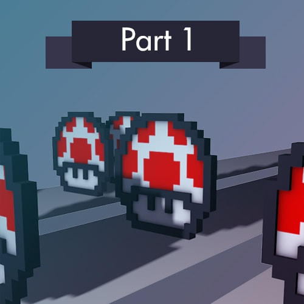
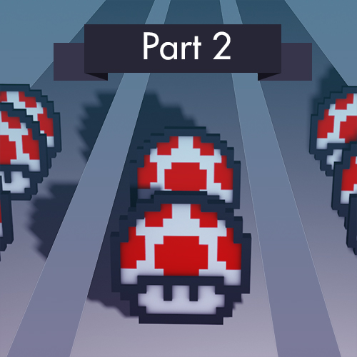
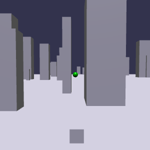
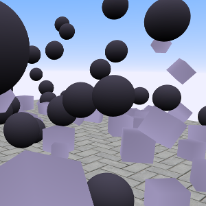
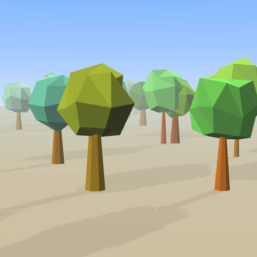
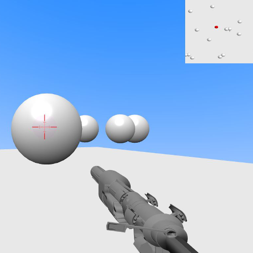
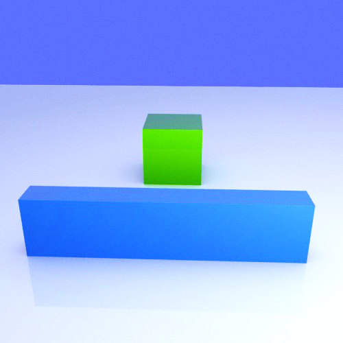

Babylon.js tutorials
How to contribute to Babylon.js
Follow these steps to become
an official contributor!
an official contributor!

Basics - part 1
Learn the basics of the 3D framework Babylon.js by creating a whole game.
There are mushrooms !
There are mushrooms !

Basics - part 2
Learn the basics of the 3D framework Babylon.js by creating a whole game.
There are more mushrooms !
There are more mushrooms !

Action Manager
Actions are a simple way to interact with your scene, and are launched by a trigger.
With this new system, we will try to create a simple game prototype.

Physics
In this tutorial, we will try to use a new physics plugin : Oimo.js.

VertexData
In this new Babylon.js tutorial, we will learn how to retrieve and
manipulate vertices of an object, to finally update their values in order to create a new geometry.

FPS creation
This tutorial will explain how to create a FPS game with Babylon.js.

Play with physics
This tutorial will explain how to manipulate a mesh with the default physics plugin in Babylonjs : Oimo.js.